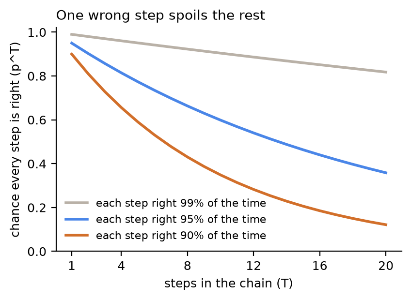
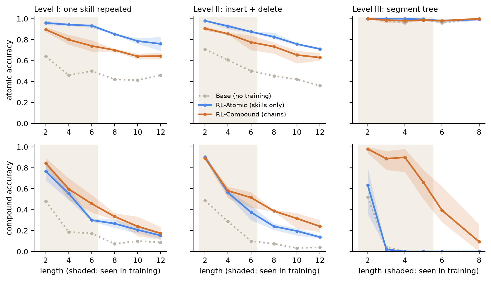
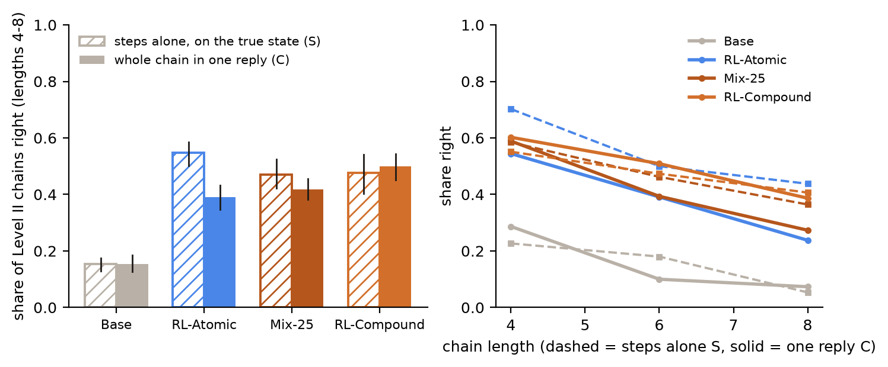
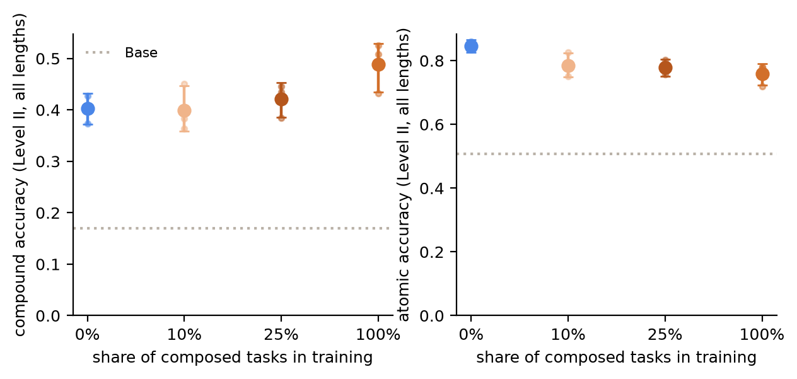
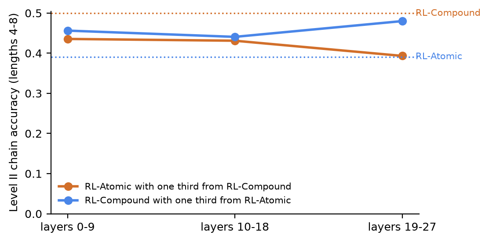

← Research·Experiments·
At 1.7B, RL on single skills already lifts chained tasks; RL on chains buys the chaining, not the skills
A pre-registered small-scale replication of a NeurIPS 2026 study that found RL on single skills transfers poorly to tasks that chain them. On Qwen3-1.7B the chain-trained model wins where it matters most (segment trees: 0.65 against 0.11), but skill-only training already doubles chain accuracy on insert-and-delete tasks, and a step test shows why: each kind of training buys something different.
results/summary.json.Summary: the short answer and the key results
In short
Does RL on single skills fail to transfer to tasks that chain them, while RL on chains transfers back, in a small model?
Partly. On Qwen3-1.7B, RL on chained tasks beats RL on single steps at chaining: for segment-tree construction, where the steps are easy and the bookkeeping is hard, by +0.54 (0.65 against 0.11), and for chains of inserts and deletes on five data structures by 0.09 (0.49 against 0.40), with intervals above zero. But the other half of the published asymmetry does not hold here: training on single steps already raised chain accuracy from 0.17 to 0.40, and training on chains left single steps 9 points worse than training on them directly (0.76 against 0.85). A step test, which hands the model each step of a chain with the true state, explains the split: skill-only training makes each step more reliable but leaves a gap between doing the steps and doing the chain in one reply (0.55 against 0.39); chain training closes that gap (0.48 against 0.50) at some cost to the steps. Chain training helps most where the untrained model could already do the steps.
Key results
| What we tested | Result | Compared with |
|---|---|---|
| Does chain training beat skill training on chains (T1, pre-registered)? | Yes at Level III (segment trees): 0.652 [0.583, 0.711] against 0.109, difference +0.54 [+0.46, +0.62]. Yes at Level II (insert and delete): 0.489 against 0.403, +0.09 [+0.03, +0.14]. Not shown at Level I (insert only, 2 seeds): +0.07 [−0.03, +0.16] | Untrained model: 0.093, 0.170 and 0.183 on chains |
| Does chain training transfer back to single steps (T2, pre-registered)? | Only partly. Level II: chain training lifts single steps from 0.51 to 0.76, but 0.09 below skill training [−0.13, −0.05], failing the 5-point bar. Level III: single skills at the untrained model's 0.98 for every arm, so there is nothing to transfer | The published study: chain training "largely preserves or improves" single steps. By the pre-registered rule the asymmetry reproduces at no level |
| Skills present, chaining missing (step test, pre-registered)? | Skill-only training: every step right on the true state in 0.547 of chains, the whole chain in one reply in 0.391, gap +0.16 [+0.09, +0.21]. Chain training: 0.477 and 0.499, gap −0.02 [−0.06, +0.02] | Untrained: 0.153 and 0.153. From skill to chain training, chains in one reply rise +0.11 [+0.04, +0.17] while steps alone fall −0.07 [−0.12, −0.02] |
| Where does chain training help? | Where the untrained model already does the steps: arrays (single-step accuracy 0.90) +0.26 [+0.14, +0.38] on chains over skill training; hashmaps (0.64) +0.16 [+0.07, +0.29]; Bloom filters, heaps and binary search trees (0.16-0.32) within noise | Exploratory split, asked for after the first results |
| Does a small share of chains in the data get the gain (B1, pre-registered)? | No: 10% and 25% chains recovered −0.04 and 0.22 of the gap and lost 6-7 points of single-step accuracy | Bar: 0.8 of the gap, within 3 points of single-step accuracy |
| Where in the network (B3, exploratory)? | Distributed by the pre-registered rule: no third of the layers recovers half the gap. Layers 0-9 and 10-18 each carry about 0.4 of it (recovered 0.41 and 0.37; removed 0.40 and 0.54); layers 19-27 almost none (recovered 0.02, removed 0.18) | One third of the layers swapped between the two adapters, both directions, 3 seeds |
01Introduction
Ask a small model to insert 9 at position 1 of the array [3, 1, 4] and it will almost always answer [3, 9, 1, 4]. Ask it to do that, then delete the first element, then insert 2 at position 3, and it gets the final array wrong far more often than three single steps would suggest. The skill is there; what fails is carrying the state from one step to the next inside one reply. That gap between doing the steps and doing the chain is the subject of this note.
What is known. He, Li, Wang and Vitercik (arXiv 2609.19465, NeurIPS 2026) framed tasks as dependency graphs of skills at three levels: one skill repeated (Level I), two skills interleaved (Level II), and a branch-merge graph (Level III, segment-tree construction). With RL on Qwen3-4B, OLMo-3-7B and Llama-3.1-8B they found a decomposed-to-composed asymmetry: training on single steps barely helps chains, while training on chains also improves single steps. They explain it with errors that compound along a chain and with decision points that only chains create. Earlier work measured a related compositionality gap without any training: models answer both halves of a two-hop question yet miss the whole (Press et al., 2023).
What is missing. Their code is not released; the study used 4B-8B models whose single steps were already good; and the two explanations were argued in theory, not measured. Nobody has separated, in a trained model, how much of a chain's failure is bad steps and how much is chaining.
Does the asymmetry hold in a 1.7B model, and when a model fails a chain, is it missing the steps or the chaining?
What this note does. It rebuilds the tasks from the paper's appendix, trains 22 RL adapters on Qwen3-1.7B with a pre-registered recipe, and contributes:
- a replication at all three levels with seeds and paired intervals, where the result is mixed: the chain-training advantage holds at Levels II and III, the transfer back does not;
- a step test that splits each chain into its steps, scores each on the true state, and so measures exactly what a perfect step-by-step scaffold would score, beside what the model does in one reply;
- a negative result on data mixing: 10% or 25% chains in the training data does not buy the chain gain;
- the tasks, checker and GRPO harness as code, since the original is not public.
What counts as success. Written down before any training run was evaluated (pre-registration):
- T1: chain accuracy of the chain-trained arm minus the skill-trained arm is above zero, interval above 0.
- T2: the chain-trained arm improves single steps over the untrained model (interval above 0) and is within 5 points of the skill-trained arm (lower bound above −0.05). The asymmetry reproduces at a level if T1 and T2 both hold.
- B1: a 10% or 25% mixture recovers at least 0.8 of the chain gap, with single steps within 3 points of the skill-trained arm.
- B2: for the skill-trained arm, steps-alone accuracy exceeds in-reply chain accuracy (a gap above 0), and the chain-trained arm's gap is smaller.
02Setup
| Part | What it is | Size |
|---|---|---|
| Level I tasks | Insert only, on five data structures: array, min-heap, binary search tree (BST), hashmap (5 buckets), counting Bloom filter (10 counters, 2 hashes) | Length = starting size; a chain has that many inserts |
| Level II tasks | The same five structures; each operation an insert (probability 0.7) or a valid delete (0.3), as in the paper | Atomic: one operation. Compound: length operations |
| Level III tasks | Segment-tree construction over an integer array, every node storing [sum, best prefix, best suffix, best subarray]. Atomic: one SplitInterval, MakeLeaf or MergeSummaries. Compound: the whole tree, written in pre-order | Length = array size |
| Model | Qwen3-1.7B with thinking off, chosen by a screen of untrained models (Qwen2.5-1.5B-Instruct solved 17% of single steps, too few for RL to learn from) | 28 layers |
| Training | GRPO with a LoRA adapter (rank 32, all linear layers): 60 steps × 32 prompts × 8 samples = 15,360 replies; reward 1 if the last boxed answer equals the true final state; learning rate 3e-5 from a two-rate pilot; no KL term. Training lengths 2-6 (Levels I-II) and 2-5 (Level III), the same for both arms | One H100 per run, 25-90 minutes |
| Arms | RL-Atomic (single steps only), RL-Compound (chains only), Mix-10 and Mix-25 (each prompt a chain with probability 0.10 or 0.25), untrained | 3 seeds (Levels II, III), 2 (Level I) |
| Evaluation | Held-out items (seeds never trained on), greedy decoding, 4,096-token cap. Levels I-II: 5 structures × {atomic, compound} × lengths 2-12 × 30 = 1,800 per model; Level III: lengths 2-8 × 50 × 2 = 600 | 40,800 replies scored |
Terms. An atomic task asks for one skill on a given state; a compound task (or chain) asks for several in order, each reading the state the last one wrote. Accuracy is the share of replies whose final answer equals the true state exactly. In the step test, every compound item is split into its steps, and step t is asked as an atomic task on the true state after t−1 operations. S is the share of chains whose every step is right that way; C is the share the model solves in one reply. With greedy decoding, a scaffold that calls the model once per step on its own previous output gets exactly these prompts while it is right, so S is exactly that scaffold's accuracy, with no extra calls. The glue gap is S − C: positive means the model can do every step but not the chain.

03How the study was run
- Read the paper and rebuild its tasks from Appendix C (
tasks.py); check every structure's invariants on 300 random chains. - Screen two untrained models on 2,100 items each (Qwen3-1.7B and Qwen2.5-1.5B-Instruct); reading wrong replies found two checker fixes (a boxed answer without outer brackets, read as a tuple, which the paper's checker also accepts).
- Smoke-test the training loop (3 steps) and pilot the learning rate (30 steps each at 3e-5 and 1e-4, on training reward only).
- Write and commit the pre-registration before any study run.
- Train 22 adapters (Level II: 4 arms × 3 seeds; Level III: 2 × 3; Level I: 2 × 2) and evaluate each, plus the untrained model, on the fixed held-out sets.
- Step test at Level II on the untrained model and on RL-Atomic, RL-Compound and Mix-25 (all seeds): 450 chains of lengths 4, 6 and 8, each solved in one reply and split into 2,700 steps.
- Adapter swaps: 18 hybrid adapters (one third of the layers taken from the other arm, both directions, 3 seeds), scored on the same 450 chains.
- Analyse with the pre-registered bootstrap (2,000 resamples of seeds and of items within each structure × length cell, paired across arms).
| Fixed before any trial | Changed after reading results |
|---|---|
| Tasks, model, recipe, learning rate, arms, seeds, evaluation sets, every criterion and the bootstrap | Amendment 1: one Level III run (RL-Compound, seed 0) ran out of GPU memory at step 38 and was rerun from scratch with half the micro-batch; the update is the same function of the same rollouts |
| The step test and the adapter-swap analysis | Added (exploratory): per-structure step-test intervals and the skill-headroom split, asked for after the first results; where in-reply chains first go wrong |
Conditions: Modal H100s, one per run, at most six at once; vLLM samples the rollouts and a hand-written GRPO step updates the adapter on the same GPU. Atomic runs took about 35 minutes with evaluation, chain runs 50-90. Total compute $87.43 of Modal (billing report), of which about $8 was the screen and pilots.
04Results
4.1 Segment trees: chain training wins by 0.54, as in the paper
On segment-tree construction, the untrained model already does every single skill (0.983) and almost no whole tree (0.093). Skill training leaves that unchanged (0.994 and 0.109); chain training lifts trees to 0.652 [0.583, 0.711] while keeping single skills at 0.989 (per seed 0.71, 0.67, 0.58). The difference on trees is +0.54 [+0.46, +0.62]. This is the paper's Level III result: the steps are easy, and what fails is keeping track of which interval's summary goes where when two branches merge. As in the paper, the gain fades with size: at lengths 2-6 the arms differ by +0.63 [+0.54, +0.73], at length 8 by +0.09 [0.00, +0.26]. T2 fails here only formally: at 0.98, there is no room for any arm to improve single skills.

4.2 Insert-and-delete chains: chain training wins on chains, loses on single steps
At Level II, chain training beats skill training on chains by +0.086 [+0.027, +0.139] (0.489 against 0.403), so T1 holds. But skill training raised chains from 0.170 to 0.403 on its own, and chain training left single steps 0.088 lower than skill training [−0.127, −0.053] (0.759 against 0.847). T2 fails, and the transfer ratios are symmetric: skill training got 0.73 of chain training's chain gain [0.60, 0.90], chain training got 0.74 of skill training's single-step gain [0.63, 0.84]. The paper reports almost no chain gain from skill training at this level; here it is most of the effect. Chain training's advantage sits in the lengths beyond training (+0.12 [+0.07, +0.18] at 8-12) more than at the training lengths (+0.05 [−0.02, +0.11]).
| Level II arm (3 seeds) | Single steps | Chains | Chains, per seed |
|---|---|---|---|
| Untrained | 0.508 [0.483, 0.532] | 0.170 [0.151, 0.190] | — |
| RL-Atomic | 0.847 [0.827, 0.866] | 0.403 [0.372, 0.433] | 0.408, 0.427, 0.373 |
| Mix-10 | 0.785 [0.749, 0.824] | 0.399 [0.359, 0.447] | 0.383, 0.450, 0.363 |
| Mix-25 | 0.778 [0.751, 0.805] | 0.421 [0.386, 0.453] | 0.434, 0.446, 0.384 |
| RL-Compound | 0.759 [0.723, 0.791] | 0.489 [0.434, 0.530] | 0.432, 0.508, 0.526 |
4.3 Insert-only chains: no clear difference with two seeds
At Level I, chain training scored 0.441 on chains against 0.374 for skill training, +0.07 [−0.03, +0.16], and 0.14 lower on single steps (0.737 against 0.873). The two chain-trained seeds disagree (0.37 and 0.51), so this level is underpowered; it neither shows nor rules out the paper's result.
4.4 Skill training buys steps; chain training buys the chaining
Handed each step with the true state, the skill-trained model gets every step of a chain right in 0.547 of chains [0.501, 0.585], but solves only 0.391 [0.347, 0.433] in one reply: a glue gap of +0.16 [+0.09, +0.21]. The chain-trained model has no gap: 0.477 steps alone, 0.499 in one reply (−0.02 [−0.06, +0.02]). The untrained model has none either (0.153 and 0.153), because it rarely gets the steps right at all. Both B2 predictions hold: the skill-trained gap is above zero, and the chain-trained gap is smaller by 0.18 [0.12, 0.24].
Moving from skill to chain training raises in-reply chains by +0.11 [+0.04, +0.17] while lowering steps-alone accuracy by 0.07 [0.02, 0.12]. So chain training does not mainly make the steps better; it makes the model better at carrying state through one long reply, and pays for it in single steps. In the paper's language, it learns the decision contexts that only chains create. Which a practitioner wants depends on how the model will be used: a model called step by step by a scaffold is best trained on steps (scaffold accuracy 0.547 against 0.477); a model that must reason through the chain alone is best trained on chains.

Line: pT, the chance a chain of T steps is all right if every step is right with probability p and errors are independent. Squares: the chosen model's measured steps-alone share S; circles: its in-reply share C, at lengths 4, 6 and 8 (means of seeds, from results/summary.json). The slider starts at the model's measured mean per-step accuracy. Measured S sits above pT because errors cluster in hard structures (BST, heap) instead of spreading evenly; the distance from square down to circle is the glue gap.
4.5 Chain training helps where the untrained model can already do the steps
Split by data structure, chain training's advantage on chains over skill training follows how well the untrained model did single steps: arrays (untrained single-step accuracy 0.90) +0.26 [+0.14, +0.38]; hashmaps (0.64) +0.16 [+0.07, +0.29]; Bloom filters (0.32) +0.13 [−0.11, +0.32]; heaps (0.29) −0.03 [−0.08, +0.03]; BSTs (0.16) +0.03 [−0.07, +0.12]. On arrays, where the steps were never the problem, the skill-trained model's glue gap is the largest of any structure (steps alone 0.75, one reply 0.41). Where the steps were weak (Bloom filters: 0.32 untrained), skill training lifts them to 0.96 and the chains follow (0.08 to 0.61). This reading is exploratory, on five structures, and was asked for after the first results; but it gives a plain reason for the difference from the paper: a 4B-8B model already does single steps well, so most of its chain failures are glue, which only chain training fixes.
| Structure | Untrained single step | Chains: RL-Atomic | Chains: RL-Compound | Difference | Steps alone: RL-Atomic / RL-Compound |
|---|---|---|---|---|---|
| Array | 0.90 | 0.41 | 0.66 | +0.26 [+0.14, +0.38] | 0.75 / 0.91 |
| Hashmap | 0.64 | 0.73 | 0.89 | +0.16 [+0.07, +0.29] | 0.87 / 0.83 |
| Bloom filter | 0.32 | 0.61 | 0.74 | +0.13 [−0.11, +0.32] | 0.79 / 0.55 |
| Heap | 0.29 | 0.07 | 0.04 | −0.03 [−0.08, +0.03] | 0.15 / 0.03 |
| BST | 0.16 | 0.14 | 0.16 | +0.03 [−0.07, +0.12] | 0.17 / 0.07 |
Table: step-test chains (lengths 4-8, 90 per structure per seed, 3 seeds). "Untrained single step" is the untrained model's accuracy on the 270 steps of each structure's chains, asked alone with the true state.
4.6 A small share of chains in the data does not buy the gain
With 10% of prompts as chains, chain accuracy was 0.399 (recovery −0.04 of the gap between the two pure arms); with 25%, 0.421 (recovery 0.22 [−0.49, +0.83]). Both mixtures also lost 6-7 points of single-step accuracy against pure skill training, so neither passed B1, and neither beat pure chain training on the average of the two (−0.03 and −0.02, intervals including 0). The mixtures also hit the token cap more often (8-10% of single-step replies, against 2-3% for the pure arms), which costs them single steps. A data-efficient recipe that gets both gains was not found here; a curriculum (steps first, then chains) is the obvious next test.

4.7 The chaining gain is spread over the first two thirds of the layers
Giving the skill-trained adapter the chain-trained adapter's LoRA weights in layers 0-9 raised its chain accuracy from 0.391 to 0.436, recovering 0.41 of the 0.108 gap between them; layers 10-18 recovered 0.37 and layers 19-27 0.02. The reverse swap agrees: putting the skill-trained weights into layers 0-9, 10-18 or 19-27 of the chain-trained adapter removed 0.40, 0.54 and 0.18 of the gap. By the rule fixed in advance (one third recovering and removing at least half while the others recover under a quarter) the gain is distributed, not localised. It sits in the early and middle layers, where a state written earlier in the reply would be read and carried forward, and hardly at all in the last third, which mostly turns representations into output tokens. This is a coarse, exploratory picture (three blocks, three seeds, 450 chains each), not a circuit; the per-seed values vary by up to 0.13.

4.8 Formatting, the token cap and skill switches do not explain it
Every trained arm hits the 4,096-token cap on 15-22% of chains (untrained 6%), and a reply that hits the cap counts as wrong. Restricted to replies that finished, chain training's Level II advantage grows to +0.14 [+0.04, +0.23]; restricted to replies with a parseable answer, it is also +0.14 [+0.04, +0.22]. So the chain-training win is not a formatting or length artefact; if anything the cap hides part of it. Unparsable answers track truncation almost one for one.
Skill switches (an insert after a delete, or the reverse), which the paper names as a Level II bottleneck, did not stand out. In the step test, steps that switch skill were as accurate as steps that repeat one (skill-trained 0.81 against 0.82; chain-trained 0.73 against 0.73). In the in-reply chains, where a wrong reply's written states let us find the first step that went wrong (arrays, heaps and Bloom filters), first errors fell on a switch step 47-48% of the time in trained arms against a base rate of 43%: a small excess, read off text, not tested.
4.9 Against the published study
| Claim of the published study (Qwen3-4B and 7-8B models) | Here (Qwen3-1.7B, LoRA) |
|---|---|
| Chain training beats skill training on chains, at all three levels | ✓ Level III (+0.54), ✓ Level II (+0.09), not shown at Level I (+0.07, 2 seeds) |
| Skill training gives "little or no gain" on chains at Level II | ✗ it more than doubled chain accuracy (0.17 to 0.40) |
| Chain training preserves or improves single steps | ✓ against the untrained model (+0.25); ✗ against skill training (−0.09) |
| The asymmetry is strongest at Level III | ✓ (single skills already at ceiling there) |
| Errors compound along a chain | ✓ accuracy falls with length in every arm; measured S stays above the independent-error product pT because errors cluster by structure |
| Skill switching is a distinct bottleneck | ✗ not visible in the step test; a small excess in where in-reply chains first fail |
05Implications for AI safety
Agentic systems are increasingly trained with RL on short verified tasks and then deployed on long chains of them. This study suggests that what such training buys depends on what the model lacks. If the steps are weak, training on steps improves chains too; if the steps are already good, chain failures are about carrying state, and only training on chains fixes them, at some cost to the steps. Evaluations that score single tool calls or single reasoning steps will overstate how well a model handles the chain, by as much as the glue gap (16 points here). The step test is cheap to run on any task with checkable intermediate states.
Before trusting a model trained on short tasks with long ones, measure both its step accuracy on true states and its chain accuracy in one reply; the difference tells you whether to train on chains.
06What this does not show
- Scale and method. One 1.7B model, LoRA instead of full fine-tuning, 60 GRPO steps at a learning rate chosen for stability (the faster pilot rate gave a little more training reward). The paper used 4B-8B models with full fine-tuning; the headroom reading is a hypothesis for the difference, not a test of it.
- Seeds. Three per arm at Levels II and III, two at Level I; the seed-to-seed spread in chain accuracy is up to 0.09, about the size of the Level II effect.
- The token cap. 15-22% of trained-arm chains hit 4,096 tokens and count as wrong. The finished-only re-test is reported, but a longer cap could change the absolute numbers.
- Exploratory parts. The per-structure split and the first-error reading were not pre-registered; five structures are five points.
- Not tried. SFT, curricula, the paper's distribution-shift and unseen-skill tests, and its tool-calling pilot. No linear probes: these models write every intermediate state in their reasoning, so a probe would read the text.
- The checker follows the paper's relaxations (tuples count as lists, hashmap bucket order is free); two were added after reading the screen, before the pre-registration.
07Reproduce it
reproduce.sh lists every command; reproduce.sh --dry-run prints them. The analysis and figures run on a laptop from the shipped replies in a minute:
python experiments/compositional-rl/analyse.py # every number in this note, into results/summary.json
python experiments/compositional-rl/make_figures.py # figures 1-5, printing what each plots
python experiments/compositional-rl/make_cover.pyTraining and evaluation need Modal and an H100 per run (modal_rl.py, configs in configs/).
08What’s next
- A curriculum: skill training first, then chains. If the two gains add up, it gets both the step accuracy of RL-Atomic and the chaining of RL-Compound.
- Test the headroom reading directly: give a 4B model weak skills (new data structures) and a 1.7B model strong ones, and see whether skill training's chain gain follows.
- Look inside the glue: in the chain-trained model, find where a state written several steps earlier is read back, and whether skill training never builds that reader.
09Questions and answers
Does RL on single skills transfer to tasks that chain them?
In a 1.7B model, yes, far more than the published study found in larger models: training on single insert and delete steps raised chain accuracy from 0.17 to 0.40. But it leaves a glue gap: the model gets every step right when handed the state (0.55) more often than it solves the chain in one reply (0.39).
Does training on chained tasks also improve single skills?
It improves them over the untrained model (0.51 to 0.76) but less than training on them directly (0.85). Where single skills were already near perfect (segment trees, 0.98), nothing changes either way.
What is the step test?
Split each chained task into its steps and ask each one alone, with the true state. The share of chains whose every step is right is exactly what a perfect step-by-step scaffold would score under greedy decoding. Comparing it with the share solved in one reply separates bad steps from bad chaining.
Should RL data include composed tasks?
If the model will reason through chains on its own, yes: only chain training removed the glue gap, and it won on segment trees by +0.54. If it will be called one step at a time, step training gave the better scaffold (0.55 against 0.48). Mixing in 10-25% chains did not get both.
AAppendix: data
PREREGISTRATION.md: the plan, committed before any study run, and amendment 1.tasks.py: the five data structures, the segment tree, prompt templates and the checker.modal_rl.py: screen, GRPO training, evaluation, step test and adapter swaps.analyse.py,make_figures.py,make_cover.py.results/screen/<model>.jsonl.gz: the untrained-model screen, one row per reply:level,domain,kind(atomic or compound),length,seed(item seed; rebuild the item withtasks.make_task),meta(skill switches),correct(0/1),n_tokens,truncated,text(the full reply).results/runs/<run>/eval.jsonl.gz: the held-out evaluation of each run (same columns); run namesl<level>-<arm>-s<seed>andbase-l<level>.curve.jsonl.gz: one row per GRPO step:reward,reward_atomic,reward_compound,n_update_seqs(replies with nonzero advantage),loss,grad_norm,trunc_frac,mean_tokens, seconds per step.config.json: the run's full settings.results/mechanism/step-*.jsonl.gz: the step test (rows of kindcompoundandstep; a step row'smetaholds its index, operation and previous operation).swap-*.jsonl.gz: the adapter swaps.results/summary.json: every test, interval and breakdown in this note.- Adapters are not shipped (22 × 70 MB);
reproduce.shretrains them.
How to cite
@misc{lie2026compositionalrl,
author = {Albert Lie},
title = {At 1.7B, RL on single skills already lifts chained tasks; RL on chains buys the chaining, not the skills},
year = {2026},
month = nov,
note = {steerlab research note},
url = {https://albertlieyingadrian.github.io/steerlab/experiments/compositional-rl/report/}
}